Introdução ao 
Introdução ao 
Fundamentos do R e pensamento com dados
8 de maio de 2026
01 - Introdução ao R e pensamento com dados
O que é análise de dados?
- Rodar o código, fazer um gráfico ou só calcular estatísticas para formalizar seu resultado?
- Nenhum dos três de forma isolada. É transformar dados em respostas.
- “É muito melhor uma resposta aproximada à pergunta certa, que muitas vezes é vaga, do que uma resposta exata à pergunta errada, que sempre pode ser tornada precisa. (John Tukey)”
Exemplo de análise de dados (Case 1)
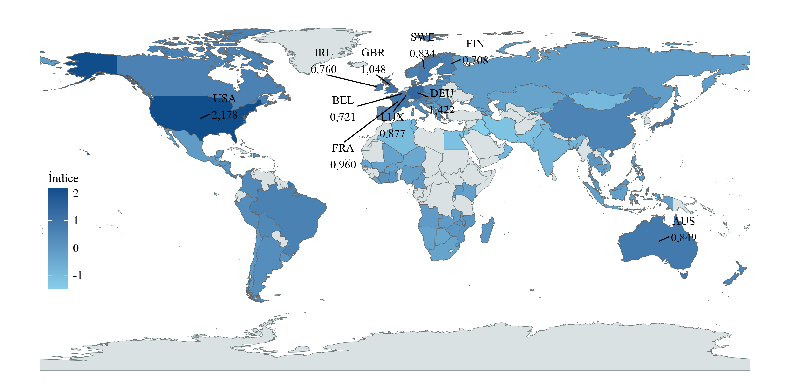
Fonte: Wilher (2023).
Exemplo de análise de dados (Case 2)
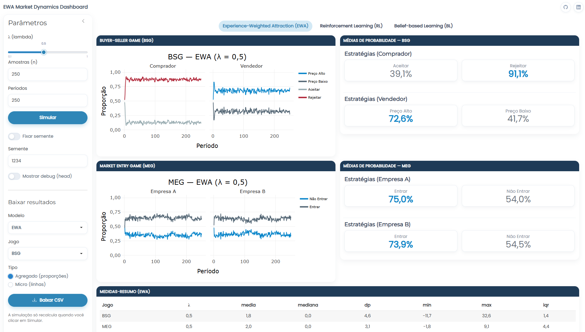
O papel do R
- Onde entra o R nisso?
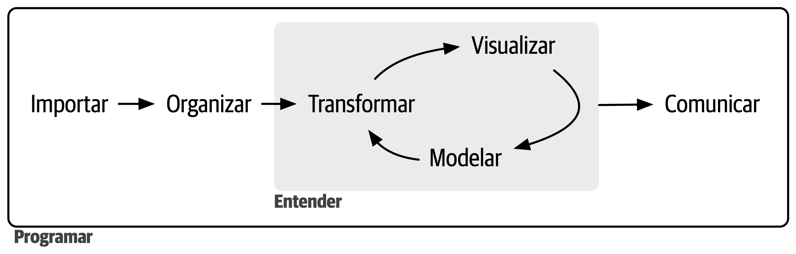
Fonte: Wickham e Grolemund (2023).
Por que economistas usam R
- Trabalha bem com grandes bases;
- É completamente gratuito e open source;
- Muito utilizado pela comunidade acadêmica e pelo mercado;
- Possui uma comunidade ativa que desenvolve e compartilha pacotes;
- Permite replicação de resultados;
- E o principal: Permite contar histórias com dados!
O que é o RStudio?
- Ambiente de Desenvolvimento Integrado (IDE);
- RStudio é um ambiente de desenvolvimento integrado projetado especificamente para trabalhar com a linguagem R.
- Suas vantagens.
- Facilita o desenvolvimento e análise de código R com recursos como edição de scripts, gerenciamento de projetos e depuração integrada.
Passos da instalação
Visite CRAN - The Comprehensive R Archive Network e baixe a linguagem, através de um arquivo executável, para seu sistema operacional;
Visite RStudio Desktop e baixe o instalador para seu sistema operacional;
Siga as instruções fornecidas nos instaladores para completar o processo de instalação.


RStudio Cloud
Visite a Posit Cloud para acessar e utilizar o RStudio sem a necessidade de instalação local;
Necessário realizar login (através de uma conta Google, Github, entre outros) para acessar o RStudio Cloud.
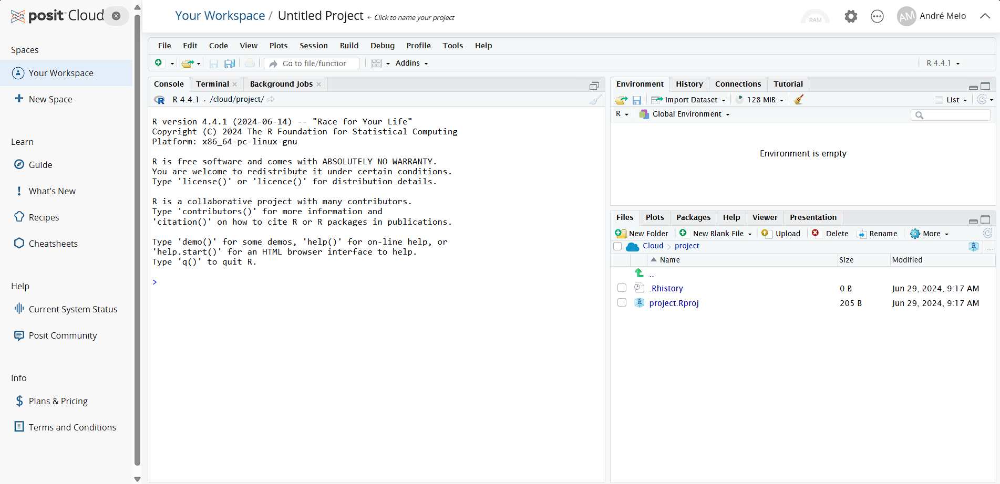
Interface do RStudio
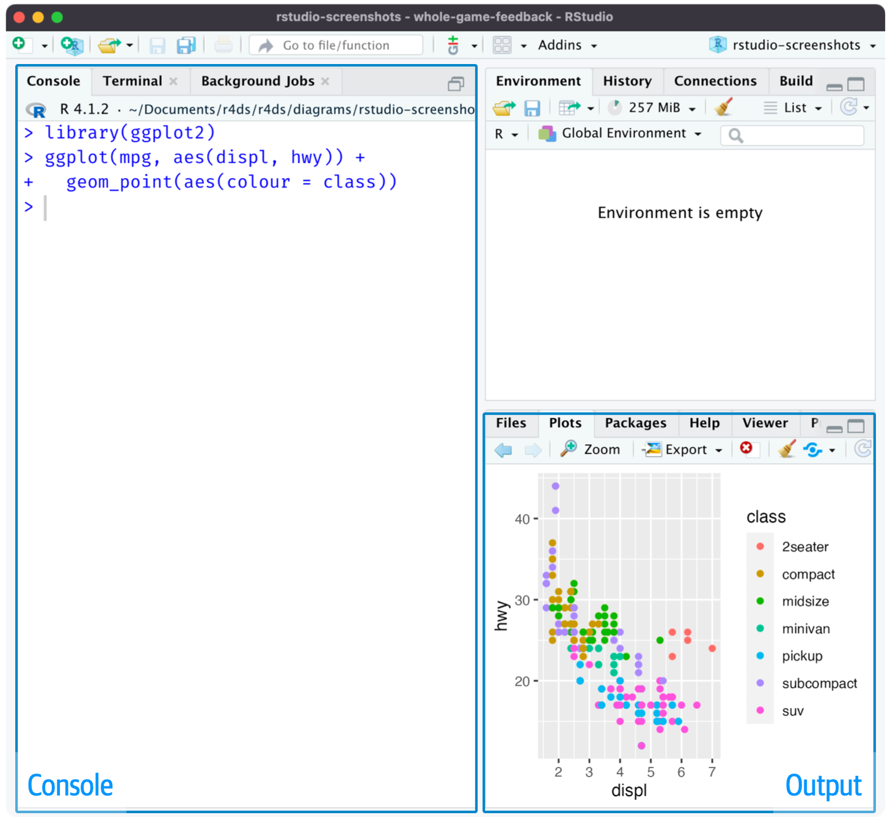
Vamos à prática!
Exercício de Fixação
- Considere os dados de uma empresa que vende 4 produtos:
- Calcule a receita de cada produto
- Calcule o lucro de cada produto
- Mostre quais produtos tiveram lucro positivo
- Qual produto teve maior lucro?
- Existe algum produto que deu prejuízo?
- Substitua os lucros negativos por 0 (como se a empresa ignorasse prejuízo)
02 - Estruturas de dados e funções básicas
Como os dados aparecem na economia
- Séries de valores (ex: PIB ao longo do tempo)
- Séries temporais (inflação, taxa de juros, desemprego)
- Tabelas com múltiplas variáveis (PIB, emprego, crédito por município)
- Bases com diferentes indicadores (social, econômico, ambiental)
- Dados por região (país, estado)
- Dados por setor (indústria, serviços, agropecuária, entre outros)
E o que podemos fazer com esses dados
- Calcular médias e medianas
- Identificar máximos e mínimos
- Criar novas variáveis
- Comparar informações
- Agrupar dados
- A ideia central é transformar dados brutos em informação econômica
Tipos de estruturas de dados
Na linguagem R, há várias estruturas de dados fundamentais que são usadas para armazenar e manipular informações de maneiras específicas.
- Vetores: Unidimensionais;
- Matrizes: Bidimensionais;
- Data Frames: Bidimensionais;
- Arrays: Multidimensionais;
- Listas: Flexíveis.
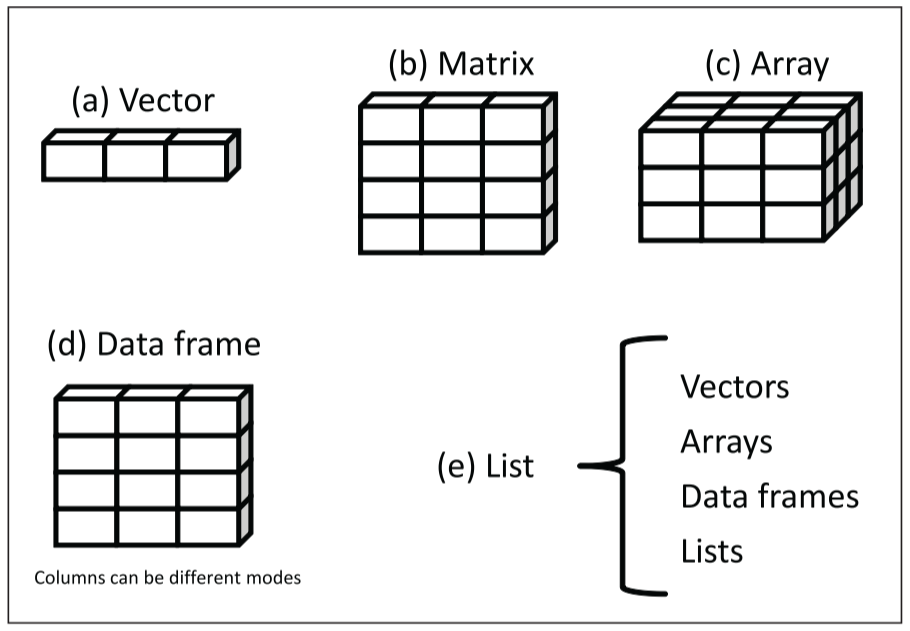
Tipos de estruturas de dados
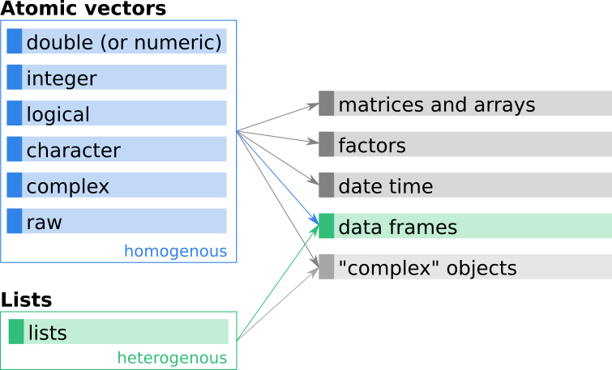
Principais classes de dados
- numeric;
- integer;
- character;
- logical;
- complex;
- raw;
- list.
Quando se mistura diferentes tipos de dados em uma operação, o R usa uma hierarquia de coerção para determinar como converter estes dados.
logical ➡ integer ➡ numeric ➡ complex ➡ character
O que são data frames?
Os data frames são estruturas de dados fundamentais no R, muito utilizadas para armazenar conjuntos de dados tabulares, onde as colunas podem conter diferentes tipos de classes (numéricos, caracteres, lógicos, etc.).
Quanto a sua estrutura, temos:
- Nome das Colunas (variáveis): Cada coluna em um data frame tem um nome que a identifica, representando seus respectivos atributos;
- Rótulos de Linhas (observações): As linhas podem ser rotuladas para identificar cada observação de maneira única ou significativa.
O que são data frames?
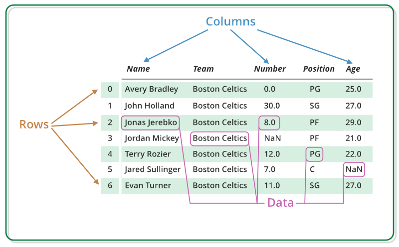
Dados nativos do R
O R vem com vários conjuntos de data frames nativos, que estão disponíveis para uso imediato. Esses conjuntos de dados são fornecidos principalmente pelo pacote datasets, que é carregado automaticamente quando você inicia uma sessão R.
Você pode listar todos os conjuntos de dados disponíveis no pacote datasets usando a função data().
- Principais conjuntos de dados:
- airquality
- mtcars
- cars
- iris
Dados brasileiros
- sidrar: IBGE (PIB, população, produção, etc.)
- rbcb: Banco Central (juros, crédito, inflação)
- ipeadatar: indicadores econômicos (IPEA)
- basedosdados: diversas bases públicas organizadas (IBGE, BCB, RAIS, etc.)
- pnadcIBGE: microdados da PNAD Contínua (mercado de trabalho)
- microdatasus: dados de saúde (DATASUS)
- censobr: Censo demográfico
- geobr: dados espaciais do Brasil (mapas, municípios)
Dados internacionais
- WDI: Banco Mundial (PIB, pobreza, educação)
- gapminder: desenvolvimento global (didático)
- oecd / APIs: indicadores econômicos de países
- IMFData: Fundo Monetário Internacional (macro global)
- tidyquant: dados financeiros (mercados, ações)
- quantmod: séries financeiras (Yahoo Finance, etc.)
- fredr: Federal Reserve (EUA: juros, inflação, desemprego)
Listas no R
Permitem guardar diferentes tipos de dados juntos
Podem conter vetores, data frames e até outros objetos, ou seja, são úteis quando trabalhamos com múltiplas bases ou resultados
Então temos:
- Vetor: uma única informação
- Data frame: várias informações organizadas
- Lista: vários objetos diferentes reunidos
Criando listas
- Dessa forma, a lista criada estará em um formato parecido com esse:
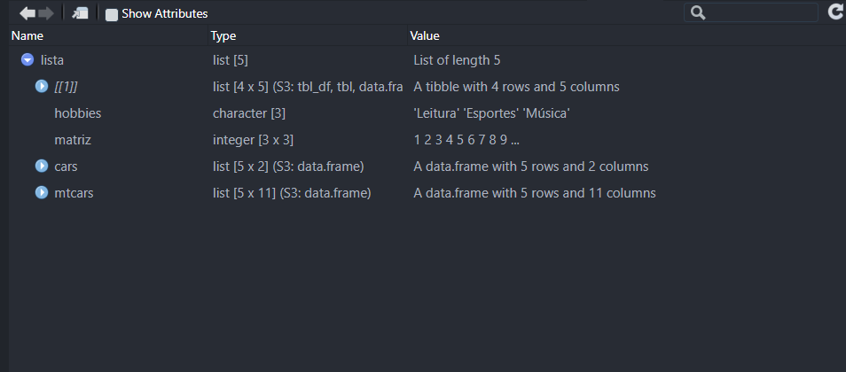
Vamos à prática!
Exercício de Fixação (Aula 02)
- Utilizando o objeto
paises, responda:
- Mostre apenas as colunas pais e pib.
- Mostre apenas os países com pib maior que 300.
- Crie uma nova coluna chamada pib_percapita, que representa a divisão do pib pela população
- Crie uma nova coluna chamada desemprego_alto, que deve ser: TRUE para desemprego maior que 7 e FALSE caso contrário
- Altere o valor do desemprego do Chile para 8 e remova a coluna pop
Exercício de Fixação (Aula 02)
- Na lista lista_econ:
- Modifique, dentro da lista, o código do Peru de “PER” para “PRU”
03 - Importação e exportação de dados
Exportação de dados
Exportar dados é uma tarefa comum no R, especialmente quando se deseja salvar resultados de análises ou compartilhar informações com outros usuários.
1. Exportando para CSV
2. Exportando para Excel (xlsx)
3. Exportando para Texto (txt)
Importação de dados
Neste caso, ao importar dados no R, estaremos carregando conjuntos de dados externos para análise, manipulação e visualização.
1. Importando para CSV
2. Importando para Excel (xlsx)
3. Importando para Texto (txt)
04 - Estruturas condicionais e de repetição
Operadores lógicos
As operações lógicas (ou booleanas), utilizadas para retornar valores TRUE ou FALSE, são fundamentais para controle de fluxo, filtragem de dados, e muitos outros aspectos da programação em R.
- Principais Operadores Lógicos:
- AND (
&e&&); - OR (
|e||); - NOT (
!).
- AND (
Operadores lógicos
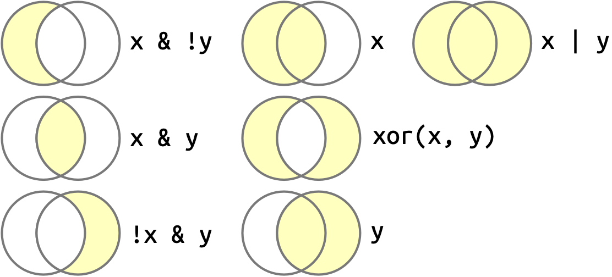
Fonte: Wickham e Grolemund (2023).
Operadores Relacionais
- Igual a (
==); - Diferente de (
!=); - Maior que (
>); - Menor que (
<); - Maior ou igual a (
>=); - Menor ou igual a (
<=); - Pertence a (
%in%).
Estrutura condicional
O if é uma estrutura condicional que permite executar um bloco de código se uma condição for verdadeira. O else é opcional e permite executar um bloco de código alternativo se a condição do if for falsa.
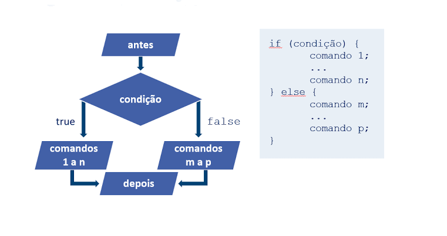
if/else/else if
O if…else permite criar dois blocos de código:
Uso de operadores lógicos em condicionais
Os operadores lógicos são amplamente usados em estruturas condicionais, como if, else e while.
Loop
Estruturas de repetição, ou loops, são fundamentais na programação para executar um bloco de código várias vezes.
- Estrutura
for
Loop
- Estrutura
while
Loop
- Estrutura
repeat
Condições vetorizadas
O ifelse é uma função fundamental no R que permite aplicar condições de forma vetorizada, ou seja, para cada elemento de um vetor, aplica-se uma decisão baseada em uma condição lógica.
Diferenças entre ifelse e if_else
ifelse- Funciona bem para vetores simples, mas pode causar problemas de coerção de tipos e eficiência em grandes conjuntos de dados ou quando esses tipos são mistos, como mostrado no primeiro exemplo.
if_else- É mais seguro para uso em data frames, mantendo a coerência dos tipos de dados e evitando problemas de coerção, como mostrado no segundo exemplo.
O que são funções?
Uma função é um conjunto de instruções que recebe entradas (argumentos), realiza operações específicas e retorna uma saída (valor de retorno).
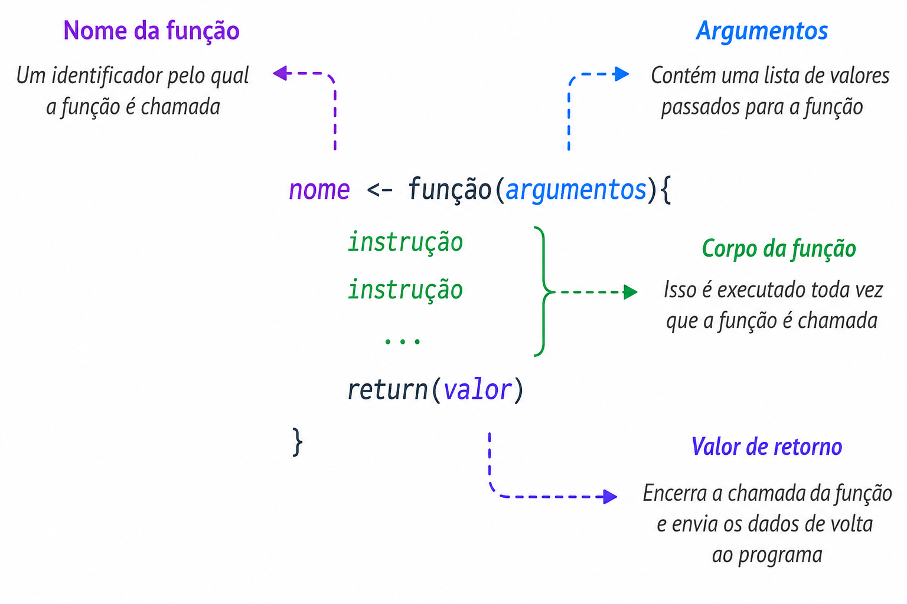
Funções com condicionais
A seguir, iremos criar uma função em R para calcular o Índice de Massa Corporal (IMC) e determinar a faixa de peso (abaixo do peso, peso normal, ou acima do peso) utilizando estruturas condicionais (if, else if, else).
O IMC é calculado pela fórmula:
\[ \text{IMC} = \frac{\text{peso}}{\text{altura}^2} \]
Neste caso, \(peso\) é o peso da pessoa em quilogramas, e \(altura\) é a altura em metros.
Funções com condicionais
Definindo a Função calculo_imc:
calculo_imc <- function(peso, altura) {
# Verifica se peso ou altura são NA
if (is.na(peso) | is.na(altura)) {
return(NA)
}
# Calcula o IMC
imc <- peso / (altura^2)
# Avalia o IMC e retorna a faixa de peso correspondente
if (imc < 18.5) {
return("Abaixo do peso")
} else if (imc < 25) {
return("Peso normal")
} else {
return("Acima do peso")
}
}Funções com condicionais
E então, podemos utilizá-la com base nos valores dos vetores altura e peso.
Como aplicar funções aos dados?
Primeiramente, iremos instalar o pacote dados, que oferece uma versão traduzida dos conjuntos de dados listados, facilitando o acesso e a compreensão para usuários que preferem ou necessitam de informações em português.
# A tibble: 5 × 5
nome altura massa cor_do_cabelo cor_da_pele
<chr> <int> <dbl> <chr> <chr>
1 Luke Skywalker 172 77 Loiro Branca clara
2 C-3PO 167 75 <NA> Ouro
3 R2-D2 96 32 <NA> Branca, Azul
4 Darth Vader 202 136 Nenhum Branca
5 Leia Organa 150 49 Castanho Clara Como aplicar funções aos dados?
Neste caso, aplicaremos a função calculo_imc ao conjunto dados_starwars. Porém, será necessário tornar a altura dos personagens, que está em centímetros, em metros.
Vamos usar mapply para aplicar a função calculo_imc as colunas de massa e altura de dados.
# A tibble: 5 × 6
nome altura massa cor_do_cabelo cor_da_pele categoria_imc
<chr> <dbl> <dbl> <chr> <chr> <chr>
1 Luke Skywalker 1.72 77 Loiro Branca clara Acima do peso
2 C-3PO 1.67 75 <NA> Ouro Acima do peso
3 R2-D2 0.96 32 <NA> Branca, Azul Acima do peso
4 Darth Vader 2.02 136 Nenhum Branca Acima do peso
5 Leia Organa 1.5 49 Castanho Clara Peso normal